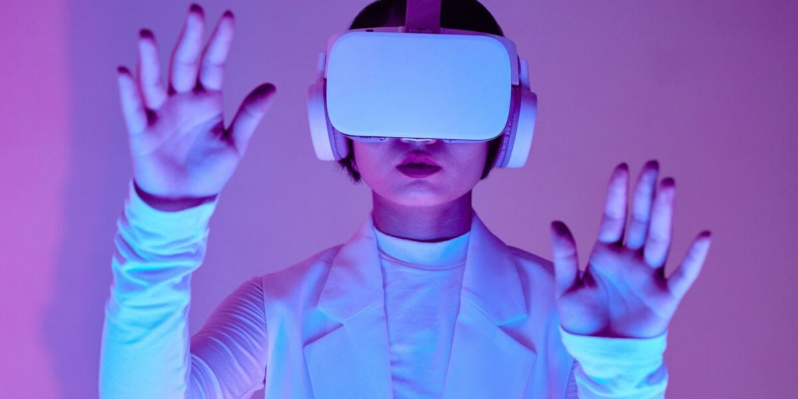

Nossos Serviços
Por unir o físico ao digital, especialmente num mundo pós-pandemia, a Realidade Virtual (VR) vem redefinindo os rumos da educação e também da vida corporativa. Nas escolas, a Realidade Virtual possibilita aprendizado interativo e profundo, enquanto nas empresas otimiza processos e colaboração, mudando a dinâmica dos processos que eram feitos até então e impulsionando eficiência e inovação. A Port RA desde 2025 vem trilhando este caminho e transformando a visão educacional e empresarial em Realidade Virtual.
Benefícios da nossa consultoria
- Engajamento
- Entender o mercado
- Principais áreas